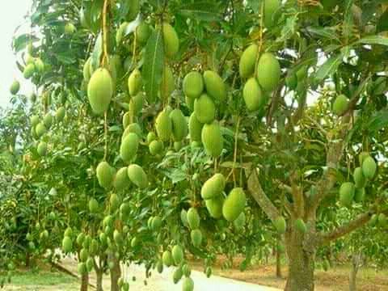
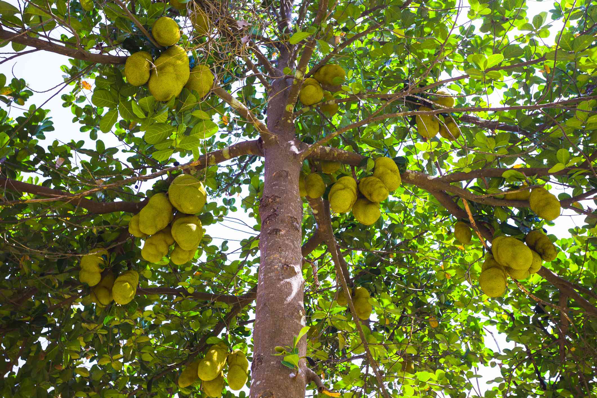
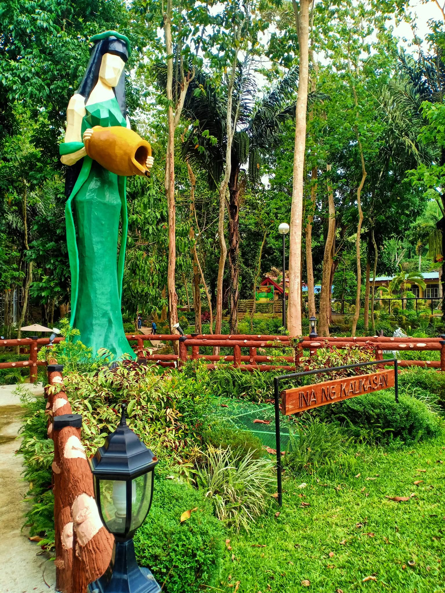
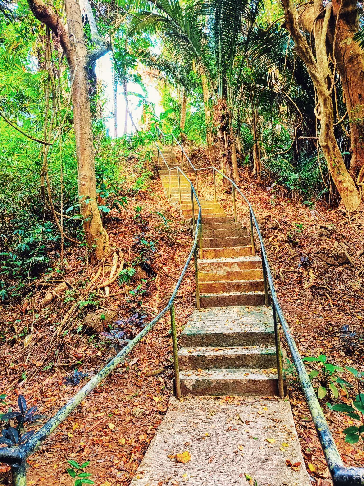
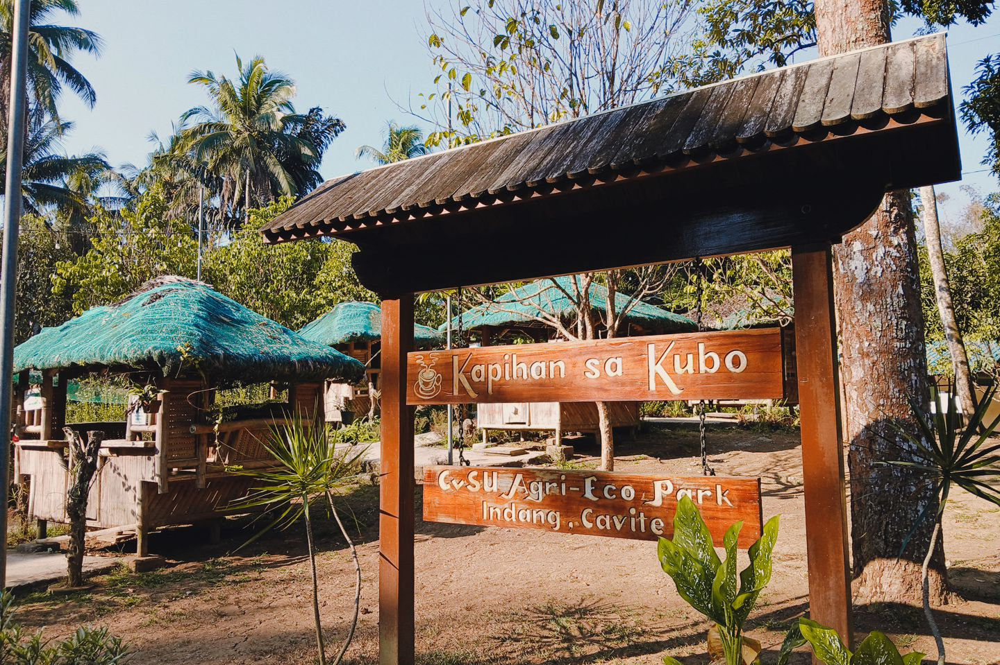
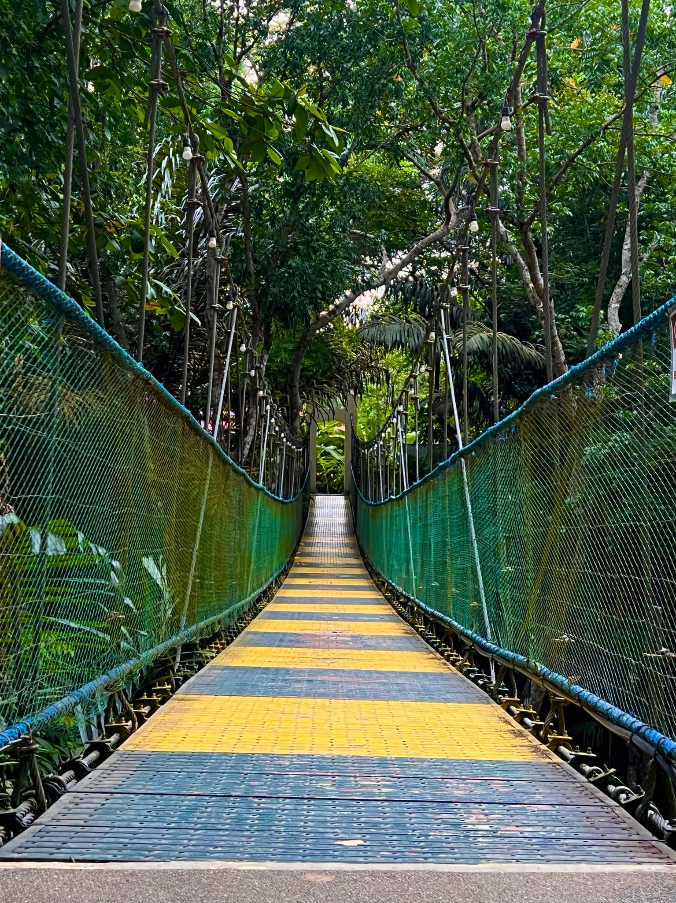

Trees
Information sourced directly from the EcoLocate mapping system.

Narra
Pterocarpus indicusKnown for its durable hardwood and beautiful yellow flowers. It is widely planted for shade and environmental restoration.
View full details & location →
Coconut Tree
Cocos nuciferaOften referred to as the "tree of life" due to its highly versatile uses, providing food, fuel, and building materials.
View full details & location →
Mango Tree
Mangifera indicaA large, long-living fruit tree native to tropical regions. It is highly valued for its sweet fruit and dense, expansive shade.
View full details & location →
Jackfruit
Mangifera indicaJackfruit trees are large, providing shade and food security, making them important in both ecological and economic contexts.
View full details & location →

Hagdan ng Kasaysayan
A historic stairway with 100 steps that reflects a chapter in the institution’s growth and transformation.
View location on map →

Tulay ng Karunungan
This bridge stands a literal and symbolic path to success.
View location on map →